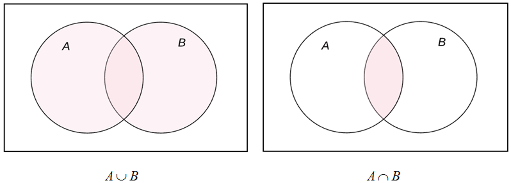
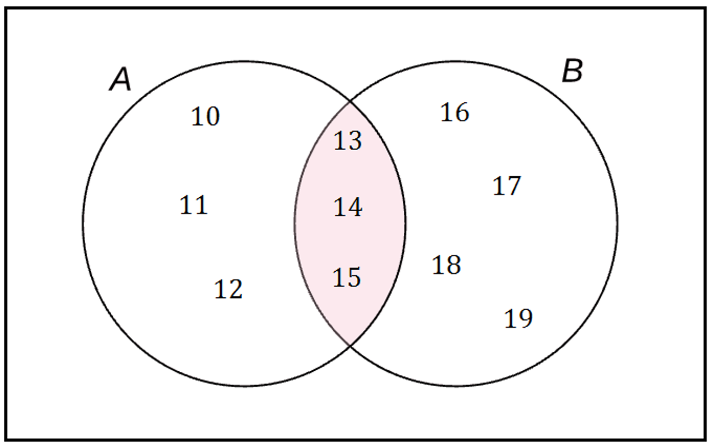
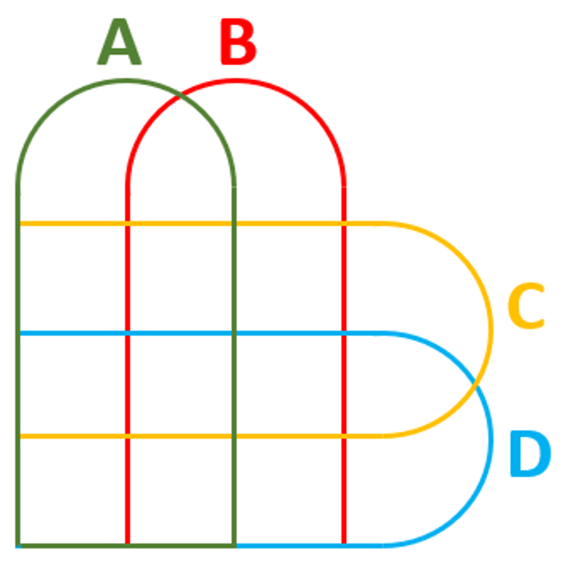

Em Matemática, quando nos referimos a operações, automaticamente nos recordamos das operações numéricas fundamentais (adição, subtração, multiplicação e divisão), porém, em Teoria de Conjuntos, várias operações podem ser realizadas. Podemos, por exemplo, somar ou multiplicar os elementos de conjuntos, reuni-los, considerar apenas os elementos comuns, enfim, há uma série de operações que podem ser feitas. Entre essas operações, as mais fundamentais são denominadas união (∪) e interseção (∩). Nesta webaula, focaremos esses dois tipos de operações. Diagrama de Venn Os diagramas de Venn podem ser utilizados para ilustrar as operações binárias de união e interseção de conjuntos. Na figura, a seguir, visualizamos a imagem mental dessas operações: Diagrama de Venn: união e interseção  Fonte: elaborado pelo autor. A região sombreada no primeiro diagrama representa A∪B; já a região sombreada no segundo diagrama representa A∩B. Sejam os conjuntos A={10,11,12,13,14,15} e B={13,14,15,16,17,18,19} , o conjunto A∪B consiste no conjunto formado por todos os elementos de A e de B. A∪B={10,11,12,13,14,15,16,17,18,19} Repare que há elementos pertencentes a ambos os conjuntos, porém, ao efetuarmos a operação união, esses elementos são contabilizados uma única vez. Já o conjunto A∩B consiste no conjunto formado pelos elementos comuns aos conjuntos A e B. A∩B={13,14,15} Confira a representação desse exemplo pelo diagrama de Venn: Diagrama de Venn: exemplo  Fonte: elaborado pelo autor. Você sabia que é impossível criar um diagrama de Venn para quatro conjuntos A, B, C e D utilizando apenas círculos? Um diagrama de Venn para n conjuntos consiste basicamente de n curvas simples e fechadas no plano que determinam uma região conexa para cada uma das interseções que os conjuntos formam (CERIOLI, 2004). Por meio de círculos, é possível fazer o diagrama para 1, 2 ou 3 conjuntos. Entretanto, é possível desenhar diagramas de Venn para mais de 3 conjuntos, desde que sejam utilizadas outras formas geométricas, diferentes do círculo. Para quatro conjuntos, podemos utilizar o diagrama representado a seguir: Diagrama de Venn para quatro conjuntos  Fonte: Clubes de matemática da OBMEP (2019, [s.p.]). O livro de Barbosa, em seu segundo capítulo, páginas 48 a 57, trata da Álgebra de Conjuntos e destaca o tratamento das relações entre conjuntos ilustradas com Diagramas de Venn. Lá, você encontrará exemplos e exercícios já resolvidos, bem como poderá colocar o conhecimento em prática resolvendo os problemas propostos. BARBOSA, M. A. Introdução à lógica matemática para acadêmicos. Curitiba: InterSaberes, 2017.